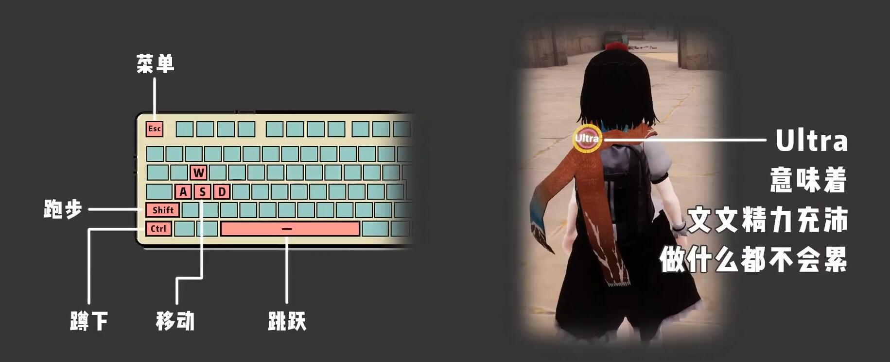
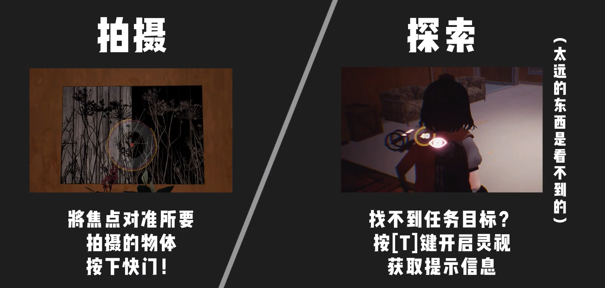
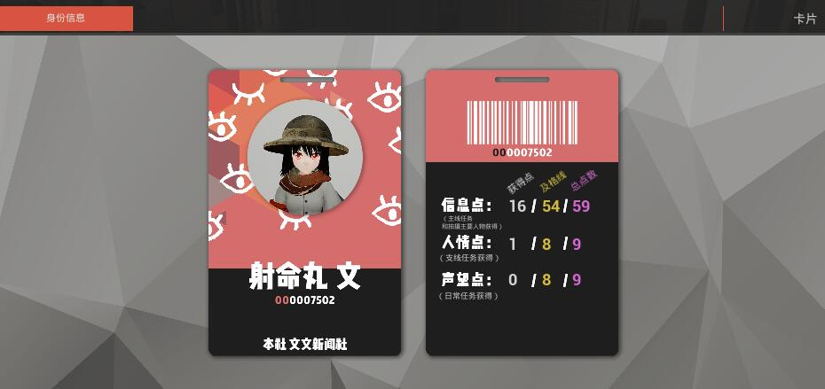
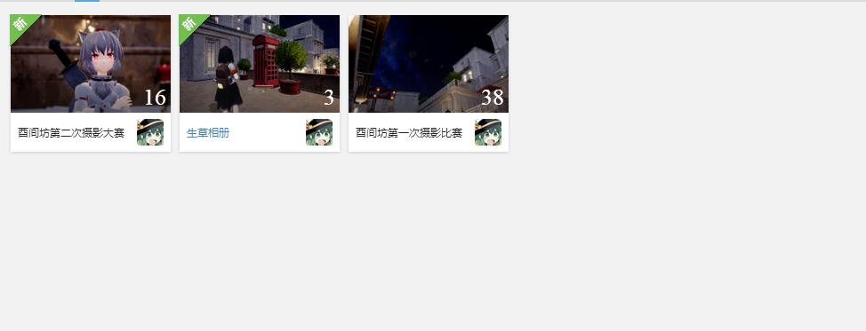
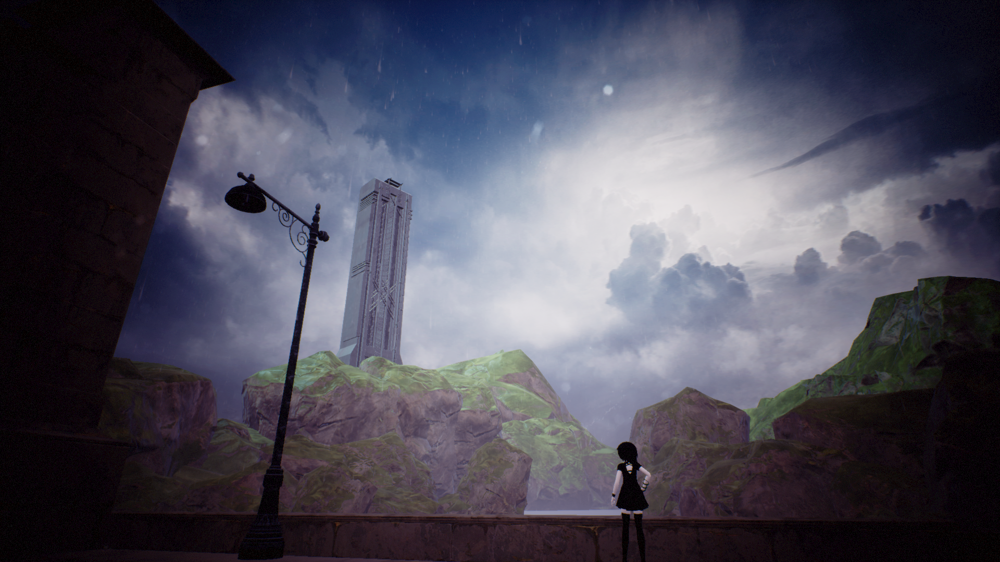
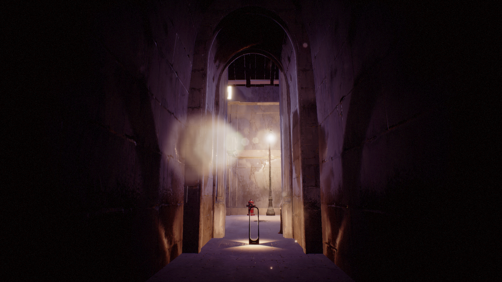
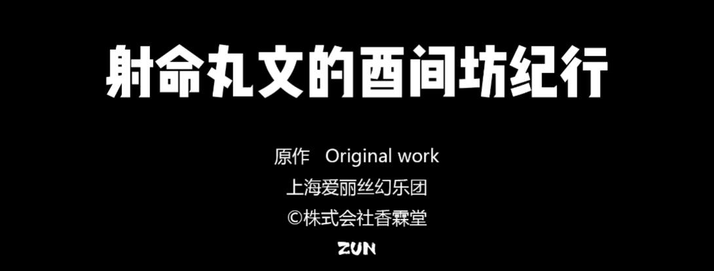

《射命丸文的酉间坊纪行》游戏内容与玩法
2020/08/27
MqyGalaxy

《射命丸文的酉间坊纪行》是一款3D剧情向同人游戏，本作为《寂静的故乡》重置版前传
玩家将扮演射命丸文，在“是害坊”这座新兴的妖怪城市，一步步揭开雾气重重的谜团。
酉间坊属于实验性作品，制作组将更多的精力放在了《寂静的故乡》重置制作，瑕疵是不可能避免的，希望大家理解。
如若您没有玩过《寂静的故乡》，也请不用在意，欢迎您游玩本游戏！
※ 图文内容仅作辅助说明，具体内容请以游戏实际内容为准
游戏操作方式：

W、A、S、D：
- 分别控制角色的前进、后退、左/右移动
- 进入奔跑状态
- 蹲下
- 跳跃
- 菜单/小地图等
体力条：
- 位于文文的肩部，一开始显示 Ultra ，代表体力条为满，在一些操作后会扣除体力条，可以通过 “睡觉” “用餐” 来恢复；如若体力条为0，一些行动将会得到限制

拍照：射命丸文随身携带的相机会为你记录下您想记录的瞬间
- 按下 R 键拿出相机
- 鼠标左键 拍摄照片
- 更多键位在游戏中拿出相机将会显示提醒
灵视：在当您寻找线索的时候，不如依靠一下天狗的直觉
- 按下 T 键 开启灵视
拍照/灵视在使用时会消耗体力条，但在体力条归零时无法使用
在游戏内请时刻注意UI提示，它为您在是害坊的旅途提供帮助
游戏游玩过程：

在游戏内，玩家达成及格分数，即可解锁隐藏内容
信息点：
- 主线任务和拍摄主要人物获得
人情点：
- 支线任务获得
信息点：
- 日常任务获得获得
主线章程将讲述射命丸文与一些老朋友解开发生在是害坊中的疑案
支线与日常任务为是害坊的各地出现的大小事件
成就/收藏品/服装 也会在是害坊大大小小的地方出现，玩家可以在游戏内进行收集
游戏存档为实时存档，无需玩家手动存档
如果您已经游玩完毕，可以将存档保留，以用于《寂静的故乡》重置版
更多游戏活动：

在官方玩家群中，不定期时间会举办酉间坊摄影大赛
如果您有兴趣可以加入酉间坊官方群参与其中
第二次酉间坊摄影大赛火热举办中：详细信息
酉间坊第一次摄影大赛获奖照片：


最后，祝您在《射命丸文的酉间坊纪行》中收获更多的游戏乐趣。

MqyGalaxy
2020/08/27